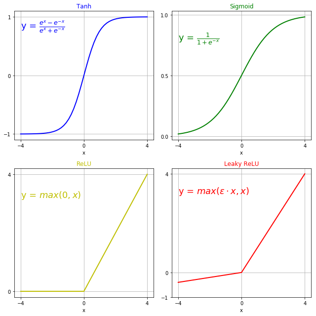
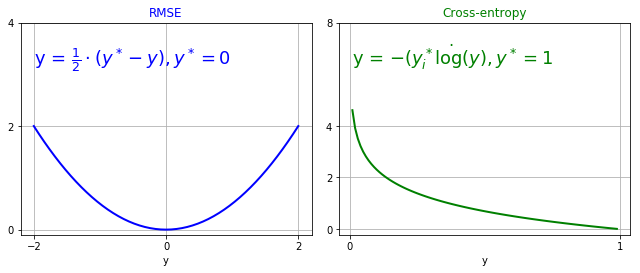

1. Introduction
This post belongs to a new series of posts related to a huge and popular topic in machine learning: fully connected neural networks.
Plenty of books, lectures, tutorials and posts are available out there. The scope here is to analyze the topic with a slightly different perceptive.
The series scope is three-fold:
- visualize the model features and characteristics with schematic pictures and charts
- learn to implement the model with different levels of abstraction, given by the framework used
- have some fun with one of the hottest topics right now!
This post’s structure resembles a bit a cheat sheet. It gives an overview of the topic content, so it could be good either for a fresher to understand what to expect from it when he/she starts embarking at this interesting journey and for a practitioner to quickly review the key points.
2. What is a neural network?
When we talk about neural networks, we need to specify the inner structure of the network itself that is going to transform the fed input into the output. In this post series, we tackle the quintessential model in deep learning: deep feedforward neural network (DFNN). It is also referred to as multi-layer perceptron (MLP).
A DFNN is a stack of connected units or nodes called neurons. Each connection can transmit a signal from one neuron of a layer to another neuron in the next layer. The incoming signal to a neuron is first processed and then transmitted to the following neurons connected to it. Each signal strength is either amplified, derated or inverted according to the link weight magnitude and sign.
Deep refers to the structure of the network, like a stack of layers. The number of layers (excluded the input layer) gives the depth of the model.
Feedforward means that information flows through the model from the left (input) to the rightmost layer (output). There is no feedback connection within the model.
These networks are called neural since they have been loosely inspired by neuroscience. If the combination of signals coming into a node (neuron) is strong enough, the neuron fires and sends the result (1) to the connected outgoing neurons. If it doesn’t, they won’t receive anything from it. However, modern research is focused on the mathematical and engineering theory to extend the capability of such models, rather than perfectly modelling or mimicking the human brain.
I would argue it also held for aerospace engineering when they started getting into the understanding of aerodynamics phenomena rather than duplicating birds! Still, some concepts and ideas have been taken from one discipline to another.
To summarize, DFNNs can be thought of as function approximation machines that can excel at given tasks in a wide range of statistical conditions.
3. Benefits and drawbacks
3.1 Benefits
DFNNs are a universal function approximator, as proven by the universal approximation theorem. In other words, they are able to learn every function from a given pair of input/output. However, the proof is not constructive regarding the number of neurons required, the network topology, the weights and the learning parameters.
It can also handle both regression and classification problems without changing the network structure but the last layer. Indeed, the output layer, combined with the loss definition, is responsible for defining the type of problem: 1) a linear layer returns the output model estimate and RMSE loss is employed for regression, 2) a linear layer gives the logit of one class (binary classification) or the logits of the set of classes (multi-classification).
DFNNs scale to large datasets. This property has been a key factor for their success while SVMs suffer to handle datasets with more than $10^5$ examples.
The simple feedforward mapping structure from input $X$ to output $Y$ eases many developers and practitioners to enter this field and start building powerful applications.
The internal structure (stack of hidden layers) is responsible for learning meta-features that are finally used to generate the output. This concept is so powerful that represents one of the central points of deep learning. We as developers need to focus less on feature engineering but more on collecting properly-distributed data and on making sure they are representative of the world to capture.
They are differentiable, so reliable learning algorithms can be applied to maximise performances. They are also fast to train, with respect to other NN structures or machine learning algorithms.
The optimized final model is also light to implement in production, since only weights and biases of each layer need to be saved and the forward process requires matrix multiplication and element-wise nonlinear functions.
One of the critical (but very interesting) points of deep learning is the higher level of meta-learning, i.e., finding the best hyperparameters of the model. DFNNs come with a few hyperparameters: number of layers, number of units per layer, weight initialization method, activation function, optimizer, regularization to name the most relevant ones.
They can also be easily stacked or embedded into other models
3.2 Drawbacks
DFNNs can, however, struggle to handle more complex input structure with higher space dimensions, such as 2D images, 2D time-series text (one dimension for the word embedding, one for the sentence, a sequence of words), 3D video and 2D time-series audio.
They tend to overfit if no regulation techniques are applied, such as dropout, L1/L2 penalty, noise injection and early stopping.
Feature space generation can be large but sparse due to lack of data.
They are, as pretty much every model in deep learning, extremely challenging to interpret and debug. A newly emerging area of research is investigating how such models can be understood by human beings and be tested to prevent them from unexpected and undesired behaviour.
4. Applications
DFNNs can be directly applied to input if its space can be mapped to the output space. Otherwise, they can be stacked to the end of a feature-extracting (or encoding) step to generate the actual output distribution over the classes, if the problem is to classify the input. In practice, the last layer or set of layers of a large network, such as a convolutional neural network, is a DFNN.
Application areas include vehicle control, trajectory prediction, process control, natural resource management, quantum chemistry, general game playing, pattern recognition, face recognition, 3D reconstruction, object recognition, sequence recognition, medical diagnosis, finance, data mining, visualization, machine translation, social network filtering and email spam filtering.
5. Structure
The building block of DFNNs is the neuron. Figure shows how the two inputs (blue dots), $x_1$ and $x_2$, are fed to the neuron (red circle) to generate the output $a$. Inside the neuron the affine transformation is applied by using the network parameters that has to be learnt:
$$ z = w_1\cdot x_1 + w_2\cdot x_2 + b $$
where $w_1$ and $w_2$ are the weights whose magnitude is related to the cyan arrow width, $b$ is the bias (orange square) and z is the intermediate result (green dot).
Since stacking multiple linear operators does not change the model structure, here a non-linear function is placed to transform $z$ to $a = f(z)$, the actual neuron output (red dot).
The function $f$ has to be non-linear. We will see the activation section later for further details.

Now we stack many units (neurons) to get a layer and many layers to get a deep network.
Here the scheme of a two layer NN, with 2 inputs and 2 outputs, while the hidden layer has 3 units.

The affine transformation is applied to the vector of inputs $\vec{a^{l-1}}$, which are outputs of the previous layer, to get the intermediate neuron variable $z_j^l$ of unit $j$ at layer $l$:
$$ z_j^l = W_{:,j}^{l^T} \cdot \vec{a^{l-1}} + b_j^l $$
The weight matrix $W$ size is $(I_l, O_l) = (O_{l-1}, O_l)$, where $I_l$ and $O_l$ are the number of units of the previous and current layer, respectively.
If we vectorize the above expression, we get:
$$ z^l = W^{l^T} \cdot \vec{a^{l-1}} + \vec{b^l} $$
Let’s say we take the first layer $l=1$. From the above picture, we can see 2 inputs coming in, $dim(\vec{a^{0}}) = (2, 1)$, weight matrix size is $dim(W^l) = (2, 3)$, therefore $dim(W^{l^T}) = (3, 2)$ and both bias and output sizes match, $dim(\vec{b^{1}}) = dim(z^{1}) = (3, 1)$.
The layer output $a$ is simply got as:
$$ a_j^l = f(z_j^l) $$
6. Output layer
The output layer is where we define the problem to solve: either regression or classification.
Regression needs a linear function as output layer:
$$ y = W^T\cdot \vec{h} + b $$
where $h$ is the output of the last hidden layer.
Classification is handled into two different ways: binary and multi-class. For binary classification, the network outcome has simply to be a Bernoulli distribution $P(\hat{y}=1 | x)$. The sigmoid function squashes the outcome into the $[0,1]$ interval to be a valid probability and it is differentiable:
$$ P(\hat{y}=1 | x) = y = \sigma(W^T\cdot \vec{h} +b) $$
For a multi-class problem, the network has to return a vector $\vec{y}$ of probabilities summing up to 1, where each element is the probability of input $x$ of belonging to class $k$:
$$ P(\hat{y}=k | x) = \vec{y}_k = softmax(\vec{z})_k = \frac{e^{z_k}}{\sum_j e^{z_j}} $$
where $\vec{z}$ is the output of the last affine transformation:
$$ \vec{z} = W^T \cdot \vec{h} + \vec{b} $$
The weight matrix $W$ linearly transforms the space of the last hidden layer into the k-dimensional space of the class probability distribution.
7. Hidden layer and activation function
One or more hidden layers are meant to learn features that help the problem to be solved with a linear function.
Stacking linear affine transformations is useless if the goal is to capture non-linear behaviour. We need to add an activation function. Activation comes from the idea that the neuron fires if a combination of its inputs exceeds a certain threshold. In modern DFNNs, continuous and differentiable functions are used. In particular, it is preferred not to use a function whose derivative is nearly everywhere 0, otherwise, it is hard to propagate the loss information. Activation functions typically have to squash the input data into a narrow range that makes training the model more stable and efficient. However, ReLU is an example of a function that introduces only a lower bound.
Main functions used in practice are:
- Tanh: Hyperbolic tangent
- Sigmoid: “S”-shaped curve
- ReLU: Rectified Linear Unit
- leakyReLU: Leaky Rectified Linear Unit
First, we import the necessary libraries.
import numpy as np
%matplotlib inline
import matplotlib.pyplot as plt
xx = np.linspace(-4, 4, 51)
tanh = lambda xx: (np.exp(xx) - np.exp(-xx))/(np.exp(xx) + np.exp(-xx)) # np.tanh(xx)
sigmoid = lambda xx: 1/(1+np.exp(-xx))
relu = lambda xx: np.maximum(0, xx)
leakyRelu = lambda xx: np.maximum(0.1*xx, xx)
actFuns = [tanh, sigmoid, relu, leakRelu]
ylimits = {'Tanh': ([-1, 0, 1], r"$\frac{e^{x}-e^{-x}}{e^{x}+e^{-x}}$"), 'Sigmoid': ([0, .5, 1], r"$\frac{1}{1+e^{-x}}$"),\
'ReLU': ([0, 4], r"$max(0, x)$"), 'Leaky ReLU': ([-1, 0, 4], r"$max(\varepsilon\cdot x, x)$")}
colors = 'bgyr'
plt.figure(figsize=(9, 9))
for kk, (fun, name, col) in enumerate(zip(actFuns, ylimits.keys(), colors)):
plt.subplot(2, 2, kk+1)
plt.plot(xx, fun(xx), color=col, lw=2)
plt.grid()
plt.title(name, color=col,)
plt.xticks(np.r_[-4, 0, 4])
plt.yticks(ylimits[name][0])
plt.xlabel('x')
plt.text(-4, fun(xx).max()*.8, "y = " + ylimits[name][1], fontsize=18, color=col)
plt.tight_layout()

8. Learning
We need to tell the computer how good/bad it is doing. It is translated into a mathematical expression, loss function.
The standard loss function for regression problems is the Root Mean Square Error (RMSE):
$$ L = \frac{1}{2\cdot m}\cdot \sum_i (y_i^{gt}-y_i)^2 $$
where $y_i^{gt}$ and $y_i$ are the ground-truth and model prediction for the i-th example, respectively, and $m$ is the number of examples.
The standard loss function for binary classification is the cross-entropy, which comes from the maximum likelihood principle:
$$ L = - \frac{1}{m} \sum_i (y_i^{gt}\cdot \log(y) + (1-y_i^{gt})\cdot \log(1-y)) $$
This function extends to the following expression for multi-class cases:
$$ L = - \frac{1}{m} \sum_i \big( \sum_k y_{i,k}^{gt}\cdot \log(y_{i,k}) \big) $$
where $y_{i,k}^{gt}$ and $y_{i,k}$ are the k-th class ground-truth and model prediction for the i-th example, respectively.
Then the goal is to make sure it can improve with experience. This is equivalent to minimizing the loss function by adjusting the model degrees of freedom, i.e., the network trainable parameters.
If the function to minimize is differentiable, we can use the gradient wrt the model parameters to adjust them to converge from the initial guess toward the optimal solution.
yys = [np.linspace(-2, 2, 51), np.arange(.01, 1, 0.01)]
rmse = lambda yy: 0.5*(yy)**2
xentropy = lambda yy: -np.log(yy)
lossFuns = [rmse, xentropy]
limits = {'RMSE': ([-2, 0, 2], [0, 2, 4], r"$\frac{1}{2}\cdot (y^*-y), y^*=0$"),\
'Cross-entropy': ([0, 1], [0, 2, 4, 8], r"$ - (y_i^*\dot \log(y), y^*=1 $")}
colors = 'bg'
plt.figure(figsize=(9, 7))
for kk, (yy, fun, name, col) in enumerate(zip(yys, lossFuns, limits.keys(), colors)):
plt.subplot(2, 2, kk+1)
plt.plot(yy, fun(yy), color=col, lw=2)
plt.grid()
plt.title(name, color=col,)
plt.xticks(limits[name][0])
plt.yticks(limits[name][1])
plt.xlabel('y')
plt.text(yy.min(), limits[name][1][-1]*.8, "y = " + limits[name][-1], fontsize=18, color=col)
plt.tight_layout()

Learning means to change weights that reduce the loss function. In maths, it translates to:
$$ \min_{\theta} \sum_{x, y^{gt}} L\big(y^{gt}, y=nn(x, \theta)\big) $$
where $\theta = (W^{(k)}, b^{(k)}) \quad \forall k = [1, N_{layer}] $ is the set of weights and biases for every hidden and output layer, $(x, y^{gt})$ is a pair of input/output drawn from the dataset, $nn$ is the DFNN function and $L$ is the loss function.
9. Gradient of a vector-based function
Backpropagation comes into play now to calculate the gradient of the loss function wrt the model parameters $\theta$. If the gradient is known, the gradient descent algorithm:
$$ \theta = \theta - \lambda\cdot\nabla_{\theta} L $$
can be applied as many times as the number of epochs to converge to an optimal set of parameters $\theta^{opt}$. In the above equation $\lambda$ is the learning rate, which gives, combined with the gradient magnitude, the amount of step to take into the gradient direction.
The gradient is calculated from the loss function back to the output layer, back to every intermediate hidden layer and from there to the corresponding weights and biases. However, this backward procedure requires to know the current values of activation nodes. Those values can be determined by executing the function from the input to the output and to the loss. This concept is depicted in the below figure. Here we have three inputs ($I_1=3$), two hidden layers (5 and 6 units each) and 1 output that gives the probability of input $x$ belonging to the first class.

The backward procedure can now be executed (see below scheme). In the scheme, $g_x^{(k)}$ is the gradient at the $k$-th layer with respect to $x$ variable.
We exploit:
- chain rule of calculus to handle this composition of more than 2 functions (in this case, 7 functions, 6 layer steps + 1 loss function).
- matrix derivative for the dense layers (affine transformation).
- element-wise derivative for the activation layers.
The first step is related to the loss function (dark red box). We need to know the derivative of such a function.
$$ g_h^{(3)} = \frac{\partial L}{\partial y} = \frac{y-y^{gt}}{y\cdot(1-y)} $$
Then, if we encounter an activation layer, we apply the element-wise operation:
$$ g_z^{(k)} = g_z^{(k)}\odot h^{(k)‘}(z^{(k)}) $$
and we apply the matrix derivative if we encounter a dense layer. Three steps have to be performed: 1. backpropagate the gradient information to the previous layer:
$$ g_h^{(k-1)} = W^{(k)}\cdot g_z^{(k)} $$
- backpropagate the gradient information to the layer weights:
$$ g_W^{(k)} = a^{(k-1)}\cdot g_z^{(k)^T} $$
- backpropagate the gradient information to the layer biases:
$$ g_b^{(k)} = g_z^{(k)^T} $$
The below figure shows the scheme of the backward pass through the network.